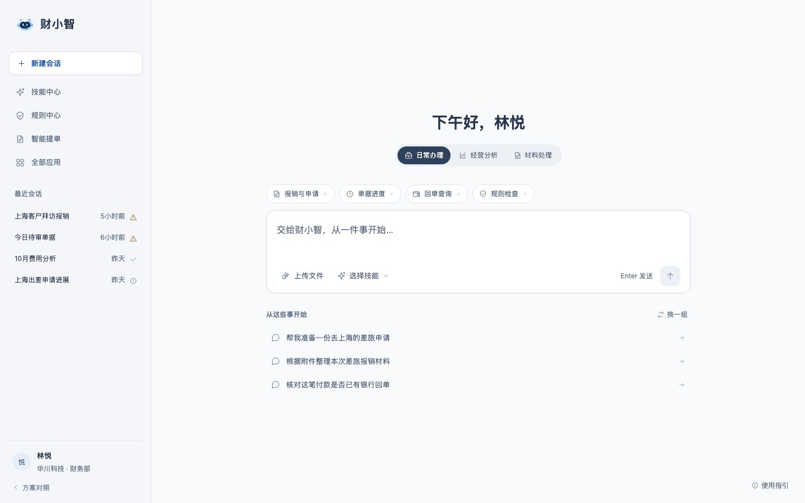
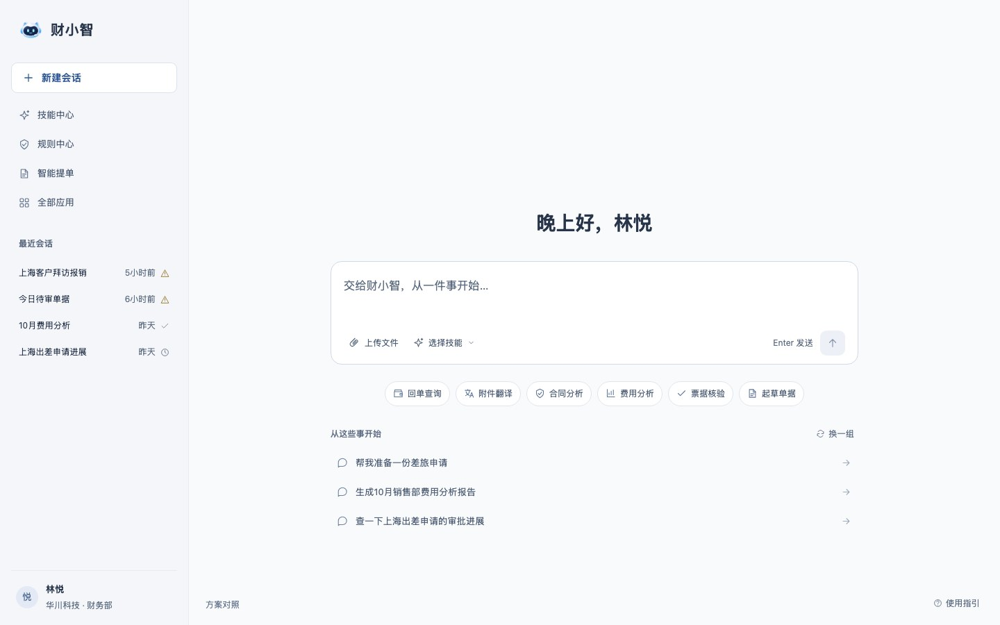

A · 场景与任务模板
借鉴 WorkBuddy 的场景组织方式。先按“日常办理 / 经营分析 / 材料处理”找到范围，再选择任务样板，进入同一个对话草稿。
浏览场景 → 选择任务样板 → 编辑需求

入口在输入框上方；分组帮助发现能力，不限制对话内容。
A 帮用户从工作场景找到合适的任务样板；B 让用户直接进入明确的能力输入状态。两版沿用相同品牌、侧栏与对话框，把差异集中在“怎样开始一件事”。
借鉴 WorkBuddy 的场景组织方式。先按“日常办理 / 经营分析 / 材料处理”找到范围，再选择任务样板，进入同一个对话草稿。
浏览场景 → 选择任务样板 → 编辑需求

入口在输入框上方；分组帮助发现能力，不限制对话内容。
借鉴 Kimi 的专属能力入口。默认保持通用对话，选择“合同分析”等能力后，输入提示、当前能力状态和示例问题一起切换。
选择能力 → 专属输入状态 → 描述需求

入口在输入框下方；选中后在输入区就近显示能力，可退出。
WorkBuddy：官方通用首页文档截图展示了框上方的场景入口；Buddy 行业定制版文档进一步明确，工作模式决定业务角色和工具组合，场景入口可绑定专家并提供预设指令。其侧重点是把可用能力组织成用户能识别的工作场景。查看官方说明
Kimi：本次实看 PC 网页，首页框下方提供研究、文档、PPT 等能力入口。点击“深度研究”或“文档”后，会进入对应路由，更换输入提示，并在输入框底部显示当前能力。它先帮助用户明确任务类型，再让用户用语言补足需求。深度研究 · 文档
版本与证据边界：WorkBuddy 的官方截图与版本更新存在时间差：5.11.0 日志已说明下线通用首页“办公 / 开发 / 设计”入口，行业定制版仍保留工作模式与场景机制。A 版是对这一场景思路的财务迁移，不是最新通用版的像素复刻；未证实通用首页每个快捷标签都采取同一种点选行为。B 版的财务能力、示例及状态同样是本次设计。
| 评估维度 | A · 场景与模板 | B · 能力直达 |
|---|---|---|
| 当前少量高频任务 | 可用，但多一层选择只有回单、翻译、合同等少量能力时，分组可能增加找入口的成本。 | 更适合当前阶段任务名称明确，一次点选即可进入相应输入状态。 |
| 能力与系统持续增加 | 分类扩展空间更大新增能力可收进相应场景；前台不需要随接入系统数量一直变长。 | 需要控制首页入口数量本版外露六项。其余能力应收进目录或由自然语言触发，不能无限铺开。 |
| 用户不知道怎么问 | 引导更细具体任务样板可以带出月份、对象、关注项等表达结构，但需要维护分类和模板。 | 引导更直接专属提示与相关示例解释需要什么材料、可以问什么，页面层级更少。 |
| Agent 核心定位 | 场景必须是可选导航用户始终能直接输入，避免强迫先选模式，再误以为只能做该类工作。 | 保留通用对话默认态能力只是发起任务的入口；选“合同分析”后仍应支持继续发起提单等后续任务。 |
| 应用中心的边界 | 按任务组织，避免复制应用目录“准备差旅申请”适合任务入口，“规则中心”仍属于操作与管理页面。 | 用明确动作或产物命名“回单查询 / 合同分析”适合首页；技能、权限、系统配置留在侧栏或对话管理。 |
| 最需要防止的误解 | 分类变成硬模式浏览“材料处理”不代表不能同时查报销制度或准备单据。 | 能力状态不等于已执行进入“附件翻译”不代表文件已处理；必须等待用户提供材料并发出需求。 |
财小智目前的高频能力已经有明确名称，用户更需要快速发起任务。回单查询、附件翻译、合同分析都容易识别，直接入口比先分类再找模板更轻。它也更符合“默认自然语言对话，应用提供辅助”的定位。
接入系统的数量不应决定首页按钮数量。十个财务系统可能共同支撑一个“单据查询”任务；一个系统也可能支撑多个任务。应按用户意图归并为稳定能力，保持有限的常用入口。
当能力目录明显增多、不同岗位的任务差异变大，或用户频繁表示“不知道能做什么”时，A 的场景与样板组织更有价值。届时应依据真实使用频次组织入口，而不是按系统名、技术组件或部门架构分类。
这是结合当前定位的设计判断，不是用户测试结果。两版均独立保留，便于用同一任务做实际对照。
此处嵌入两个独立 HTML，切换会重新加载所选页；比较连续草稿操作时，请用右侧链接在独立页面中体验。
两版为独立本地 HTML，样式、脚本和品牌图片已内联，不依赖 CDN 或业务接口。可以双击文件打开，也可以通过已有本地服务查看。没有部署、没有覆盖现有正式首页。
可操作范围为首页场景 / 能力选择、样板 / 示例、技能、文件条目、草稿及发送反馈。发送不会调用 Agent 或财务系统，页面会明确反馈尚未执行；文件只在本机保留名称等信息，不上传。导航与示例历史不代表真实业务数据，超出首页范围的入口会说明边界。
两版可调用的任务内容是原型示例，不代表服务已接入。正式产品还需接入权限、技能执行、文件处理、历史会话和业务回执。